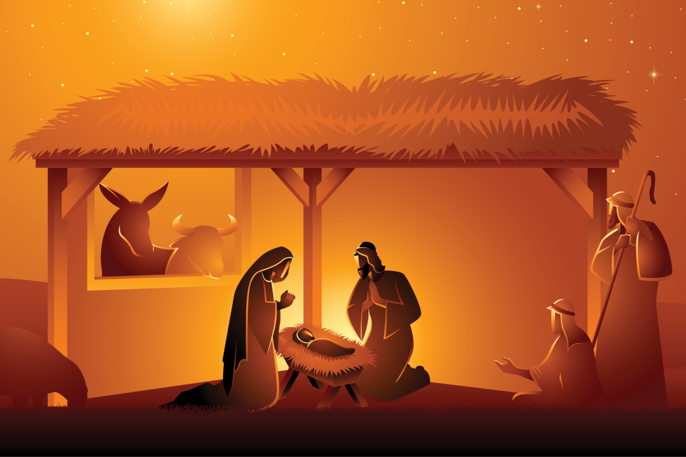
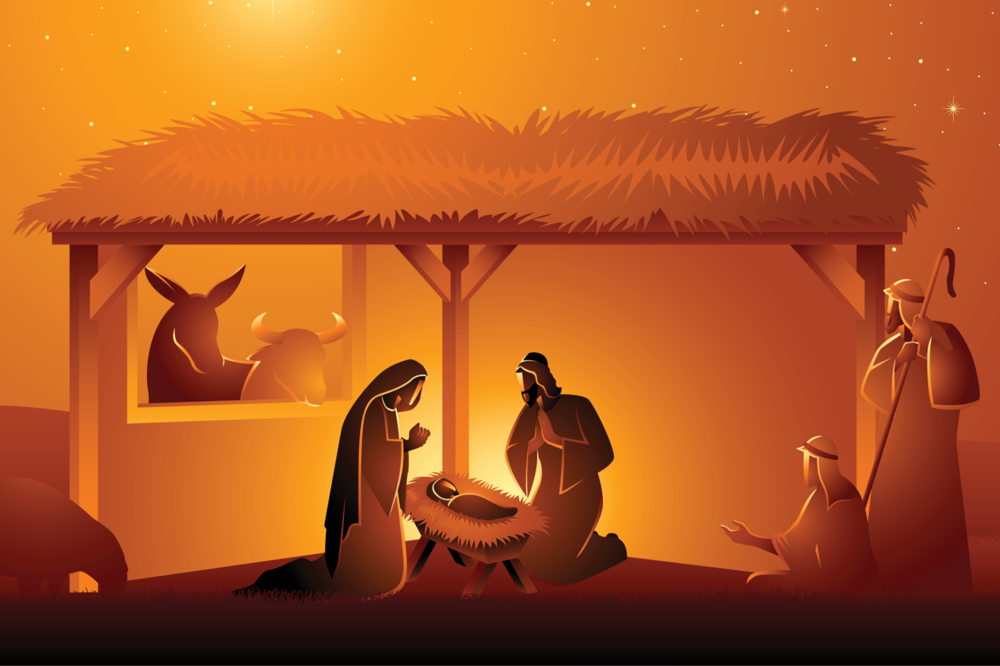
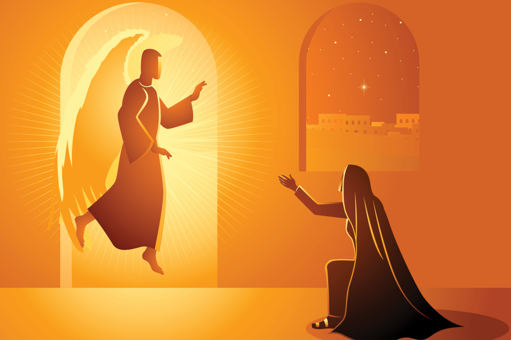
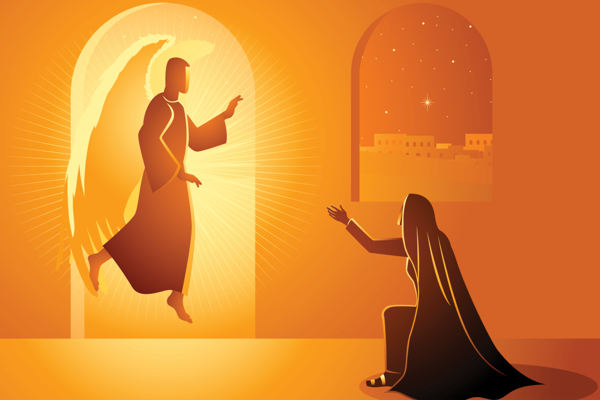

 

Primer Misterio La Encarnación del Hijo de Dios "Al sexto mes, el ángel Gabriel fue enviado por Dios a una ciudad de Galilea, llamada Nazaret, a buscar a una virgen llamada María, desposada con un hombre llamado José, de la estirpe de David; le dijo: Alégrate, llena de gracia, el Señor está contigo…Concebirás en tu vientre y darás a luz un hijo, y le pondrás por nombre Jesús. María contestó: Aquí está la esclava del Señor; hágase en mí según tu palabra” (Lc 1,26-27).
Padre Nuestro (Se reza una vez) Padre nuestro, que estás en el cielo, santificado sea tu Nombre; venga a nosotros tu reino; hágase tu voluntad en la tierra como en el cielo. Danos hoy nuestro pan de cada día; perdona nuestras ofensas, como también nosotros perdonamos a los que nos ofenden; no nos dejes caer en la tentación, y líbranos del mal. Amén.
Ave María (Se resa diez veces) Dios te salve, María, llena eres de gracia, el Señor es contigo. Bendita tú eres entre todas las mujeres, y bendito es el fruto de tu vientre, Jesús. Santa María, Madre de Dios, ruega por nosotros, pecadores, ahora y en la hora de nuestra muerte. Amén.
Gloria Gloria al Padre, al Hijo y al Espíritu Santo. Como era en el principio, ahora y siempre, por los siglos de los siglos. Amén.
María madre de gracia y madre de Misericordia. En la vida y en la muerte ampáranos Gran Señora.
Oh Jesús mío perdona nuestros pecados y líbranos del fuego del infierno, lleva al cielo a todas las almas y socorre especialmente a las más necesitadas de tú misericordia. Amén
San Miguel Arcángel defiéndenos en la lucha. Sé nuestro amparo contra la perversidad y acechanzas del demonio. Que Dios manifieste sobre él su poder, es nuestra humilde súplica. Y tú, oh Príncipe de la Milicia Celestial, con el poder que Dios te ha conferido, arroja al infierno a Satanás, y a los demás espíritus malignos que vagan por el mundo para la perdición de las almas. Amén.
Segundo Misterio La Visitación de María a Isabel “En aquellos días María se puso en camino y fue aprisa a la región montañosa, a una ciudad de Judá; entró en casa de Zacarías y saludó a Isabel. Y sucedió que, en cuanto Isabel oyó el saludo de María, saltó de gozo el niño en su vientre, e Isabel quedó llena del Espíritu Santo; y exclamando a voz en grito, dijo: "Bendita tú entre las mujeres y bendito el fruto de tu vientre" (Lc 1, 39-42)
Tercer Misterio El Nacimiento de Jesús “Sucedió que por aquellos días salió un edicto de César Augusto ordenando que se empadronase todo el mundo. Este primer empadronamiento tuvo lugar siendo Cirino gobernador de Siria. Iban todos a empadronarse, cada uno a su ciudad. Subió también José desde Galilea, de la ciudad de Nazaret, a Judea, a la ciudad de David, que se llama Belén, por ser él de la casa y familia de David, para empadronarse con María, su esposa, que estaba encinta. Y sucedió que, mientras ellos estaban allí, se le cumplieron los días del alumbramiento, y dio a luz a su hijo primogénito, le envolvió en pañales y le acostó en un pesebre, porque no tenían sitio en la posada. Un ángel se apareció a unos pastores y les dijo: Hoy, en la ciudad de David, os ha nacido un Salvador, el Mesías, el Señor” (Lc 2,1-7)
Cuarto Misterio La Presentación de Jesús en el Templo “Cuando se cumplieron los ocho días para circuncidarle, se le dio el nombre de Jesús, como lo había llamado el ángel antes de ser concebido en el vientre de María. Cuando se cumplieron los días de la purificación de ellos, según la Ley de Moisés, llevaron a Jesús a Jerusalén para presentarle, como está escrito en la Ley del Señor: Todo varón primogénito será consagrado al Señor y ofrecer en sacrificio un par de tórtolas o dos pichones. Simeón lo tomó en brazos y dijo: “Ahora, Señor, según tu promesa, puedes dejar a tu siervo irse en paz. Porque mis ojos han visto a tu Salvador" (Lc 2, 21-24).
Quinto Misterio El Niño Jesús perdido y hallado en el templo “Sus padres iban todos los años a Jerusalén a la fiesta de la Pascua. Cuando tuvo doce años, subieron ellos como de costumbre a la fiesta y, al volverse, pasados los días, el niño Jesús se quedó en Jerusalén, sin saberlo sus padres... Y sucedió que al cabo de tres días, le encontraron en el Templo sentado en medio de los maestros, escuchándoles y preguntándoles; todos los que le oían, estaban estupefactos por su inteligencia y sus respuestas" (Lc 2, 41-47)